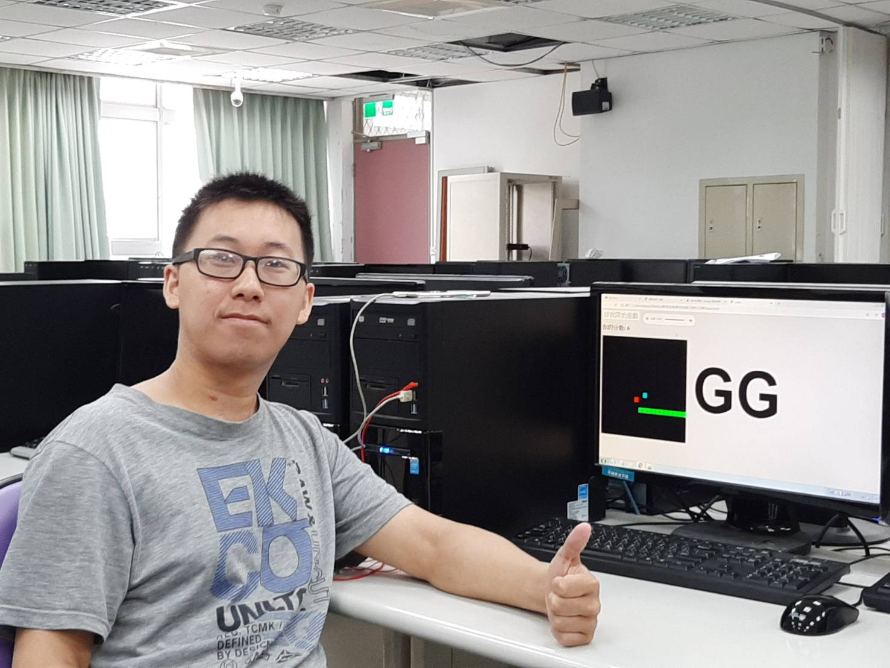
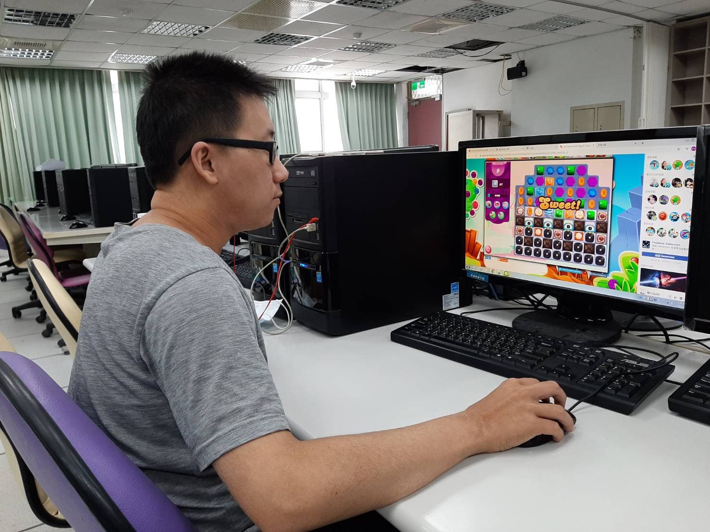

基本資料
李智翔 (Jordan)
綽號 : 小智(或稱孔雀)
性別 : 男性(新好男人XD)
年齡 : 22歲(8X年出生)
星座 : 射手座(體貼善良)
專長 : 推理 數學 數獨
偶像 : 柯南 黑羽快斗
體重 : 6X(努力瘦身中!)
身高 : 16X(努力增高中!)
學歷背景


我的興趣
算數學
玩數獨
打籃球
玩遊戲
寫遊戲
看漫畫
彈吉他
聽音樂
魔術方塊
社團經驗
糾察社
這社團是我在高中時所加入的，由於家裡離學校太近，所以有點半強迫的加入社團裡幫忙，在社課中學到有關道路上相關的知識，也學會了腹式呼吸的要領，整體而言其實還是蠻值得的。
魔術社
這社團是我大學四年來唯一參加的社團，本身對於魔術就有好感，喜歡別人看完表演後那臉上不可置信的表情，如果將來還有機會的話，會在研發新的魔術與大家分享喔!
工作經驗
餐廳內外場
這份工作是我在大一、大二時的工作，在外場我學到如何與隊友一起配合，如何與客人溝通，完成客人的需求;在內場則要會與師父們配合，完成師父們要求的事項，在內場也學到很多東西，尤其是備菜的部分。
數學輔導老師
這份工作是我在大三時的工作，工作內容是國中的數學領域，主要是帶領學生檢討考卷，用多種解題方式讓學生徹底吸收，在這邊工作蠻開心的，畢竟是自己喜歡的興趣!如果人生可以從來的話，我想我會選擇不離開那邊的!我會繼續在那邊打拼的!
目標與期許
目標
談到我的目標，我希望未來能找到有關會計與資訊的工作，如果是開發應用軟體的話那會更好，但由於自己並不是資訊相關科系的學生，若想要找到資訊相關的工作，看來我還要下很多的功夫呀! (我也好想快點去業界工作呀~)
期許
說到我大學四年來對自己的期許，我最先想到的應該是快點把學校的英文門檻給考過，因為一旦我考過了我就不用延畢了!離畢業也只剩一個月了，我可不想最後真的搞到要雙主修呀! XD
生活紀錄
漫長走道
大草原
我與魔方
我與吉他

寫遊戲

玩遊戲
平時因為有作業與考試的壓力，所以經常不能好好的與家人一起出去遊玩，所以只要到了比較空閒的時候，我都會好好的把握時間去玩樂。平時的我有很多的興趣，偶爾彈彈吉他、轉轉魔術方塊，有時間的話甚至會去寫遊戲給同學試玩，當然我也是一個很愛玩遊戲的人。大家如果對以上的資料有興趣，歡迎一起討論喔!